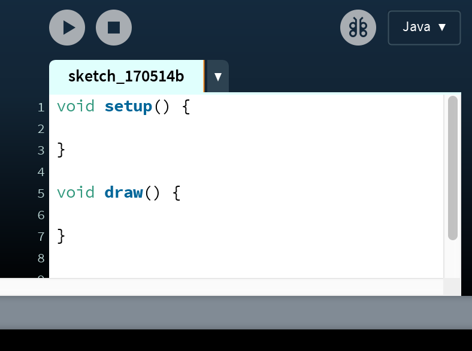
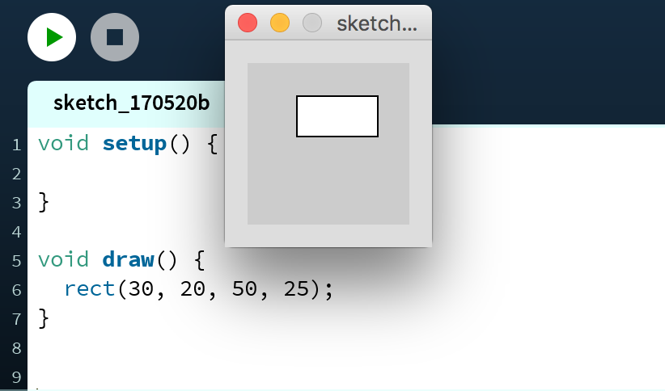
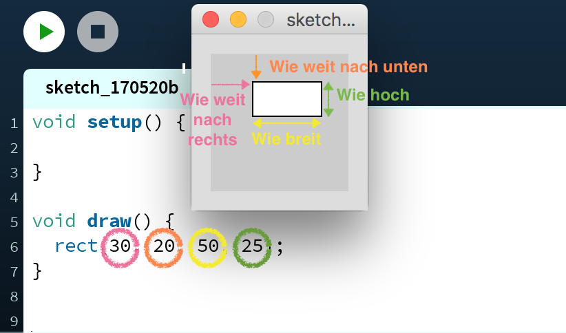
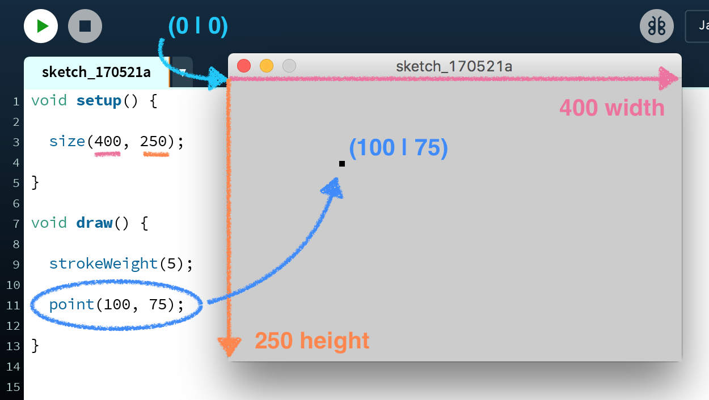
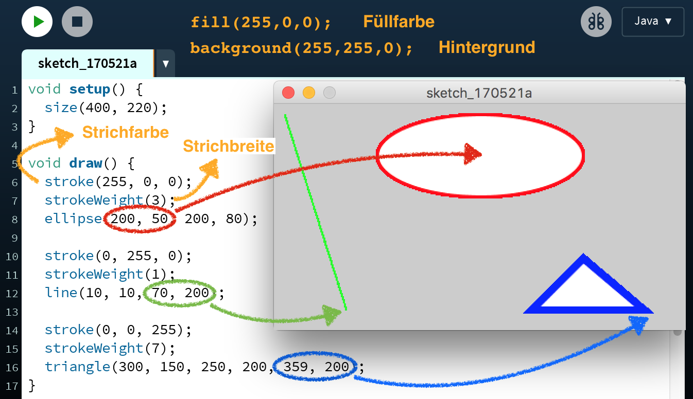
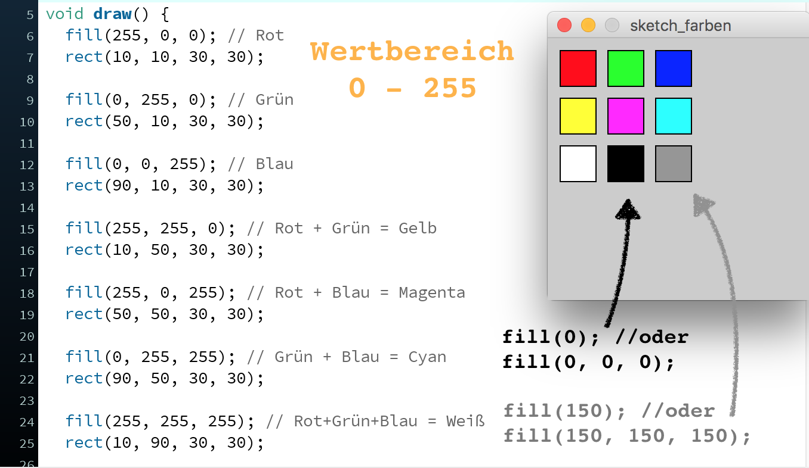
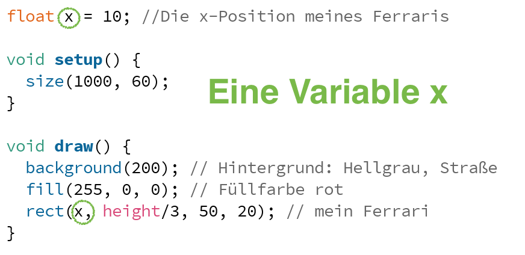
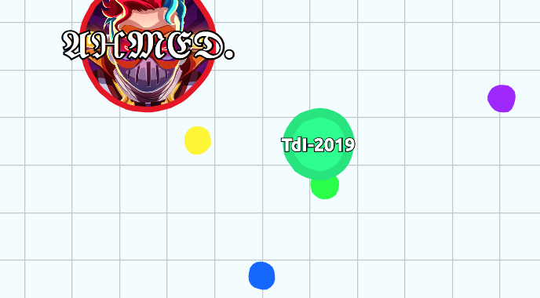

Processing
Einführung in die Programmierung leicht gemacht
Paola Maneggia paola.maneggia@ifi.lmu.de
TdI @LMU - 05. Juni 2019
Processing
Sprache und IDE, spezialisiert auf Grafik
MIT ab 2001
A Modern Prometheus - Artikel über Geschichte und Hintergrund in Medium.com
Standardsprache: Java (vereinfacht), Mode für Python, openprocessing.org und p5.js in Javascript
Processing in einer 10. Klasse
Schülerin: "Zum ersten Mal macht Informatik richtig Spaß"
Eine andere Schülerin (Anfang November)
Motivation
Stark visuell basierte Umgebungen wecken das Interesse und unterstützen das Vorstellungsvermögen:
- KhanAcademy: Javascript für Anfänger
- Scratch
- Greenfoot
- code.org
- Physical Computing, zum Beispiel der Calliope Mini
- iOS: Swift Playgrounds
Ähnliche Tools
- JGUI-Toolbox, Hans Witt
- Engine Alpha, Michael Ganshorn
- Greenfoot, University of Kent
Gut zu wissen
- Processing erzeugt einen sketch
- Standardmäßig in einem Ordner Processing
- Für jeden sketch erzeugt Processing automatisch einen Ordner mit dem gleichen Namen
- In diesem Ordner befindet sich eine Datei mit dem gleichen Namen und mit der Endung .pde
- Gute Praxis: Für jede Klassendefinition einen neuen Reiter verwenden
- Jeder neue Reiter entspricht einer weiteren .pde-Datei im sketch-Ordner
- Bilder-Dateien direkt im sketch-Ordner oder im Unterordner data
Gut zu wissen
It looks like you're mixing "active" and "static" modes
- static mode: nur Aufrufe von vorgegebenen Funktionen
- active mode: alles in Blöcken (wie setup() und draw()), bis auf Variablendeklarationen und Definitionen von Funktionen und Klassen
- Die zwei Modi getrennt verwenden!
- Mit Schülern lieber gleich dynamic mode zeigen und verwenden!
Tweak Mode
Menu "Sketch" > "Tweak" (Deutsch: "Optimieren")
oder Cmd+Shift+T (Ctrl+Shift+T on Windows).
void setup() {
size(600, 400);
}
void draw() {
ellipse(20, 20, 50, 50);
}tweak ausprobieren: Was bedeuten die vier Parameter der ellipse-Funktion?
Autovervollständigung: Strg + Leerzeichen
Dokumentation: https://processing.org/reference/
Grundlagen
Die zwei wichtigsten Blöcke sind: setup() und draw(). Der Inhalt von draw() läuft in einer unendlichen Schleife.
Draw
Der Schwerpunkt von Processiong ist Grafik. Was der draw()-Block ermöglicht, ist etwas zu zeichnen und einfache Animationen zu erzeugen. Beispiel: Code eingeben und auf die Taste "Play" drücken:

Ein kleines grafisches Fenster wird angezeigt. In diesem Fenster steht ein Rechteck. Die vier Parameter, die das Rechteck bestimmen, sind in der Abbildung erklärt:

Koordinaten im grafischen Fenster

Andere Befehle zum Zeichnen

Weitere: https://processing.org/reference/
RGB-Farbensystem (Rot-Grün-Blau)

Aufgabe: Ein oranges Rechteck mit lila Rand erzeugen!
Grobplan 1
- Processing: Leinwand & Koordinaten, Rechteck & Parameter, Grundfiguren, RGB-Farbsystem
- Globale Variablen width und height, mouseX, mouseY
- Die Blöcke setup() und draw()
- Kritikpunkt: Nicht "object-first"! (vgl JGUI-Toolbox, Engine Alpha, Greenfoot)
Grobplan 2
- Begriff von Variable → sketch Ferrari, cookie clicker
- Einfache Methoden definieren und aufrufen → Evolution der Ferrari-Implementierung
- Objekt als Einheit von Eigenschaften und Fähigkeiten, Klasse als Bauplan für Objekte → weitere Evolution der Ferrari-Implementierung; der Konstruktor
- Klassen weiter üben → Eule, Ball, Herbstlandschaft
- Methoden mit Eingabeparametern → Gesichter (? brauche bessere Idee)
- Die bedingte Anweisung → der Processing-Block keyPressed()
- Zustandsautomaten
- Methoden, die einen Wert zurückgeben
- While- und for-Schleife
- Array → Sakura
- Vererbung
- Projekt
Grobplan 3
Der Begriff von Variable
- der Ferrari
- der cookie clicker
Inspiriert von Alan Kays TED-Talk
Aufgabe Ferrari
Anmerkung: Globale Variablen in Processing
Viele Informationen über die Umgebung stehen durch globale Variable zur Verfügung
- mouseX Die x-Position der Maus (relativ zur Leinwand)
- mouseY Die y-Position der Maus (relativ zur Leinwand)
- width Die Breite der Leinwand
- height Die Höhe der Leinwand
- frameCount Wie viele Frames wurden vom Start durchlaufen
- frameRate Wie viele Frames pro Sekunde werden wiedergegeben
Aufgabe
Den Modulo-Operator und width verwenden, so dass, wenn der Ferrari rechts aus der Leinwand fährt, er wieder von links anfängt.
Eine Variable für die Geschwindigkeit ergänzen und die Geschwindigkeit via mouseY kontrollieren.
Mausklick
void mouseClicked() {
x = mouseX; // Beim Mausklick x-Position des Autos setzen
}Tastatur
void keyPressed() {
x = 0; // beliebige Taste -> Ferrari zürück zum Anfang
}Aufgabe: cookie clicker 
- Eine variable int cookies für die Anzahl von Keksen, am Anfang 0, eine Variable int multiplikator für einen Multiplikator, am Anfang 1.
- Jeder Mausklick verdient "multiplikator" cookies.
- Mit cookies kann man bezahlen, um den Multiplikator um eins zu verbessern!
- Multiplikator kaufen mit Taste 'k'.
- Hintergrundbild laden mit background(loadImage("datei_name")); Die Leinwand muss genau die gleiche Größe in Pixel haben wie das Hintergrundbild. Die Bild-Datei muss im gleichen Ordner wie die .pde Datei oder noch besser: im Unterordner data gespeichert sein.
- Gingerman-Bild von pixabay.com
Best Practice mit Objekten
Für jede Klasse einen neuen Reiter mit dem gleichen Namen wie die Klasse verwenden
Objekte im setup()-Block erzeugen
Objekte (die eine graphische Darstellung erfordern) mit einer anzeigen()-Methode ergänzen
Agar.io
Nur als Übung oder nach dem Üben auch als Leistungserhebung?
The Codint Train
Daniel Shiffman
YouTube ChannelFreie Ressourcen für Spiele
- Hintergrund, Bild, Sound opengameart.org
- Vectorgraphik pixabay.com
Work in Progress: Mebis-Kurs
Danke!